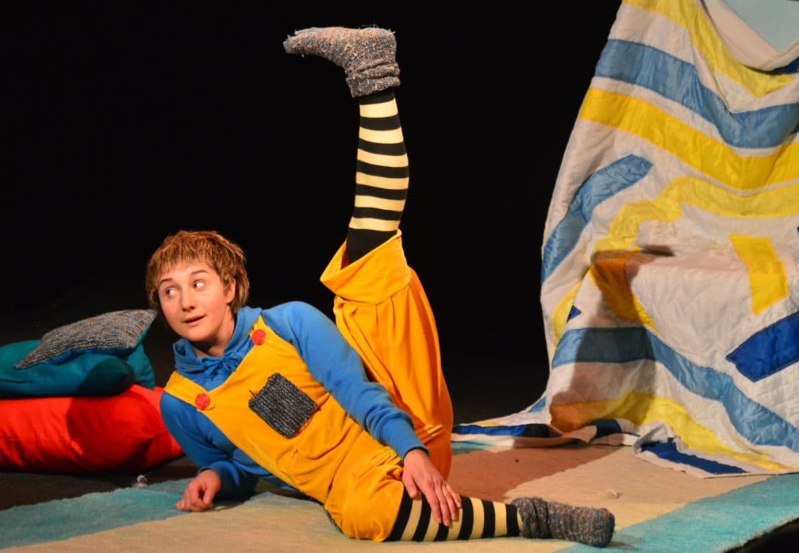
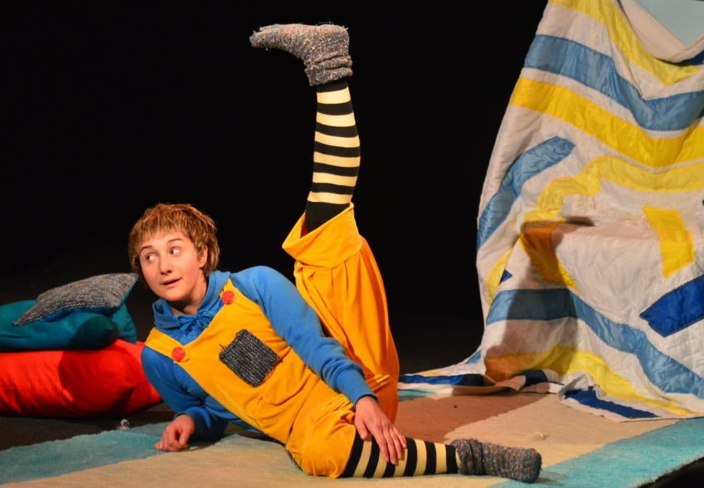
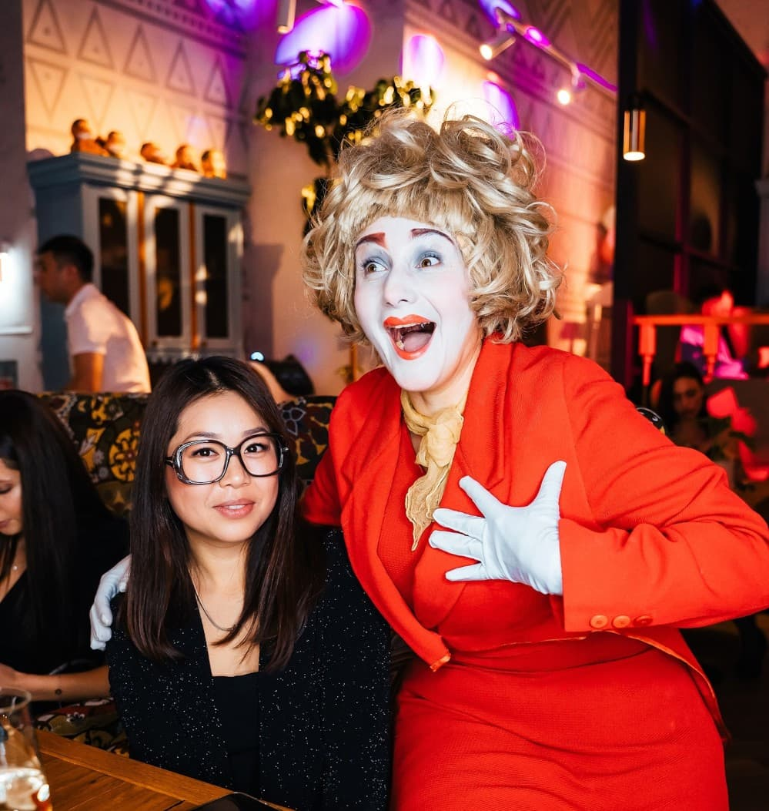
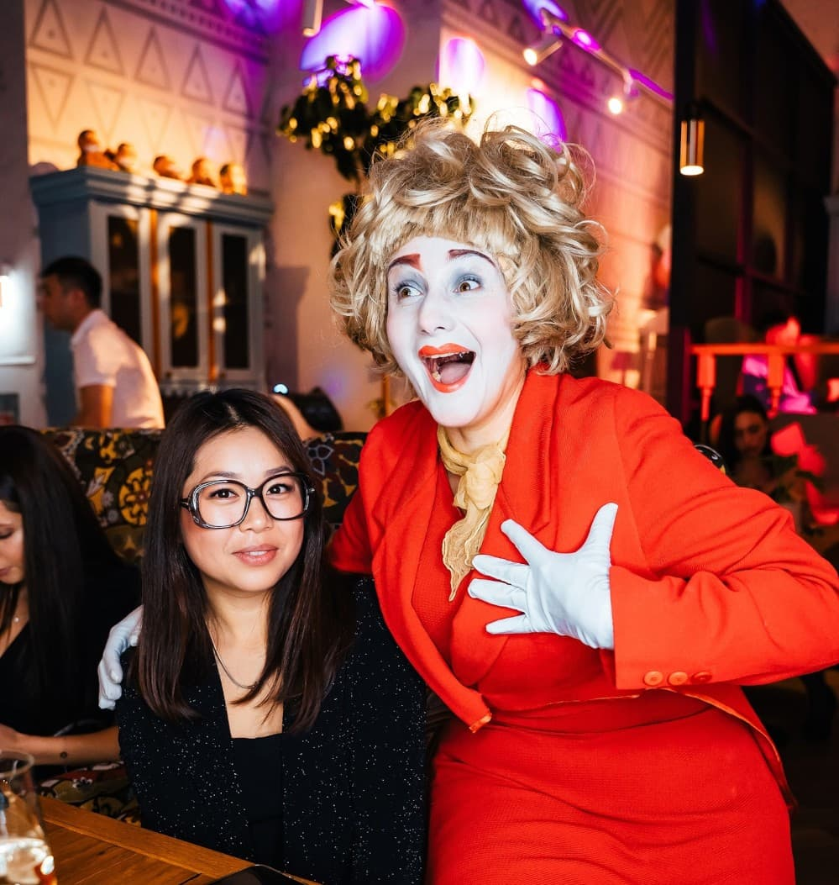

Обо мне
Маргарита Смирнова - актриса театра и кино.
Педагог актерского мастерства, больничный клоун. Автор проекта "Clown-online".
Лауреат международного фестиваля "Монокль". Победитель в номинациях театральных фестивалей: "Арлекин", "Театры Санкт-Петербурга - детям", "Короче".
Соавтор тренингов для взрослых в составе дуэта "Allegro-practic"
- 1998 г - начало актерской деятельности.
- С 2010 г - педагог актерского мастерства, участник педагогического состава образовательных форумов.
- С 2012 г - больничный клоун.
- С 2017 г. - актриса в жанре эксцентрики и клоунады.
- С 2020 г - online-уроки актерского мастерства для детей и взрослых.>
- С 2021 г - проект "Clown-online" для подопечных благотворительных фондов "Шуша-шоу".
Побывала на классах таких мастеров, как: Наташа Фиссон (худ. рук. театра "Комик - Трест", Павел Мансуров (пантомима), Екатерина Можаева (клоун Антошка. Германия), Дэвид Шайнер (США), Дэвид Ларибле (Италия), Майкл Кристенсен (Сша), Карло Мо (Испасния), Педро Фабио (Португалия). Михаил Казиник, Дмитрий Крымов.


 



 
